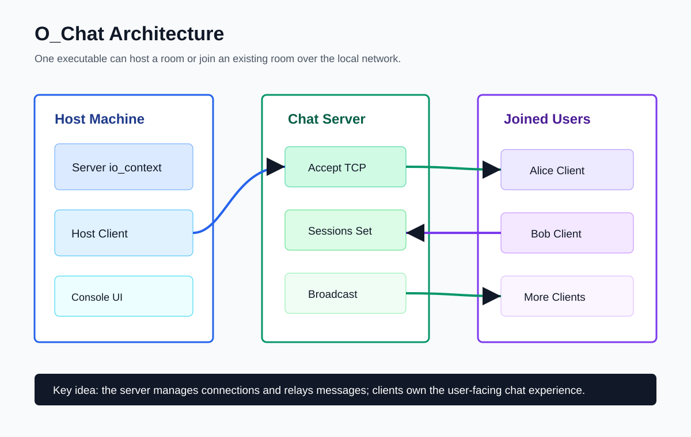
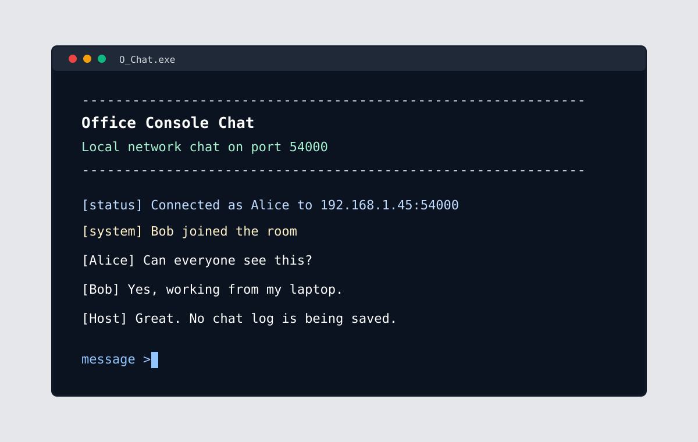
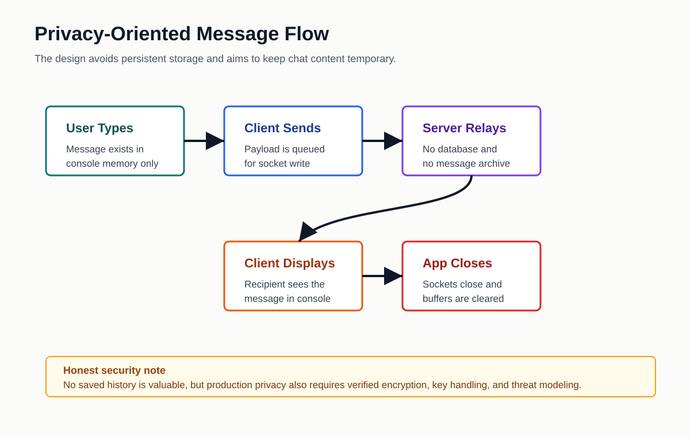

O_Chat

Why I Built It
I wanted a simple chat tool for a small office-style network where the messages do not need to live forever. The idea was one host machine, multiple people joining over LAN, and no saved chat history after the executable closes.
The project started with the rough shape of a C++ ASIO app, but the real implementation was missing. I had to fill in the server, client, and session behavior, then make the console output readable enough to use.
How It Works
One executable can either host a room or join one. The host starts a TCP server and also joins as a client. Other users connect with the host IP address. Each connected user has a server-side session, and messages are broadcast to the active sessions.

What Broke While Building It
The server existed, but was not ready yet
My first host flow created the server and immediately tried to connect the host client. That failed because the ASIO event loop was not running yet. I fixed it by separating the server and client loops so the host can listen and chat at the same time.
The port number overflowed
I stored port 54000 in a signed short. That wrapped into a negative value, which made the connection fail in a way that looked like a networking problem. Changing it to std::uint16_t fixed it.
The terminal needed some care
Once messages started arriving asynchronously, the console became messy. I added a small UI helper for consistent headers, prompts, status messages, and thread-safe output.

Privacy Choices
The main privacy decision was to avoid persistence. O_Chat does not use a database, does not write chat logs, and does not replay old messages to new users. Messages live in memory while the app is running.
I also started adding a shared room-key encryption path so the server can relay encrypted payloads. I am treating that as a work in progress. Before calling it truly secure, I would want automated tests, review, and a clearer threat model.

What I Learned
- Async networking is as much about event-loop timing as it is about sockets.
- Object lifetime matters a lot when sessions keep themselves alive during async reads and writes.
- Small type mistakes can create very confusing runtime bugs.
- A console app still needs UX work if a real person is expected to use it.
- Privacy is not just "do not save files"; it also includes transport, memory, logs, shutdown, and honest wording.
What I Would Do Next
- Finish and verify encrypted multi-client messaging end to end.
- Add graceful Ctrl+C shutdown.
- Display the host machine's LAN IP automatically.
- Add better firewall and connection error messages.
- Use TLS or a reviewed crypto library before making strong security claims.